Albo Italic Finials
Round 276. The italic’s round finials — the c’s and s’s discs, the r’s oval, the balls on v w y, the y’s drop, the lobes on f j k x, the J’s teardrop, the 2’s and 3’s swelled cuts — changed out for the c’s top end: a swell to 1.10 over 13% into a face sheared 28 degrees toward the vertical, no lip. Both italic weights. Every hairline end is held to the italic c’s own top width (65.6 at the 400, 90.6 at the 700). Per glyph: italic 400 before and after, then bold italic before and after, at the px-per-unit the caption names, native pixels. The runs are 13 px at x8 and 40 px at x2, NEAREST, lines alternating before / after.
The ends, measured on the built outline (design units, 400 / 700)
| terminal | was | end width before | after | face |
|---|---|---|---|---|
| c top | a disc, 1.15 x the end’s half-width | 65.6 / 90.6 | 65.6 / 90.6 | round → −28 |
| c bottom | a semicircular cap | 37.6 / 52.2 | 65.6 / 90.6 | round → −28 |
| s head | a semicircular cap | 41.5 / 59.2 | 65.6 / 90.6 | round → −28 |
| s foot | a disc on a path widened 1.5x | 84.6 / 67.2 | 65.6 / 90.6 | round → −28 |
| r arm | an 84 x 106 oval (116 x 146) | 84 / 116 | 65.6 / 90.6 | oval → −28 |
| f hook | a lobe closing on a flat face | 67.2 (tip 35.8) / 92.8 | 65.6 / 90.6 | flat → +28 |
| f tail | a lobe closing on a flat face | 56.0 (tip 24.6) / 77.3 | 65.6 / 90.6 | flat → +28 |
| j tail | a lobe closing on a flat face | 52.8 (tip 22.0) / 72.9 | 65.6 / 90.6 | flat → +28 |
| v rise | a 70 x 64 oval over a flat end | 70 / 97 | 65.6 / 90.6 | oval → +28 |
| w rise | the same | 70 / 97 | 65.6 / 90.6 | oval → +28 |
| x top right | a swell closing on a flat face | 64.0 (tip 54.0) / 88.3 | 65.6 / 90.6 | flat → +28 |
| y rise | a 70 x 64 oval over a flat end | 70 / 97 | 65.6 / 90.6 | oval → +28 |
| y tail | an 84 x 54 drop on a hairline | 84 / 116 | 65.6 / 90.6 | oval → −28 |
| k arm | a swell closing on a flat face | 69.1 (tip 56.2) / 95.4 | 65.6 / 90.6 | flat → −28 |
| J hook | a 1.3 flare into the 20-degree cut | 86.7 / 150.3 | 73.4 / 127.2 | +20 → +28 |
| 2 top | a 1.1 swell over 15% into the cut | 75.0 / 128.6 | 75.0 / 128.6 | +20 → −28 |
| 3 top | a 1.1 swell over 10% into the cut | 60.7 / 105.2 | 60.7 / 105.2 | +20 → +28 |
| ¢ | the c, with the bar | as the c | as the c |
Left as not a ball, read from the code and confirmed on the render: the e’s blunt terminal, the g’s ear, the j’s head, the k’s leg, the x’s two hooks, the t, the z, the a’s exit, the 3’s and 5’s run-outs, the 5’s bar, the 6’s point, the 9’s tail, the C G S beaks, the ? and the &, every dot. The account is docs/albo-finials-2026-09-19.md, the round-276 section.
Runs
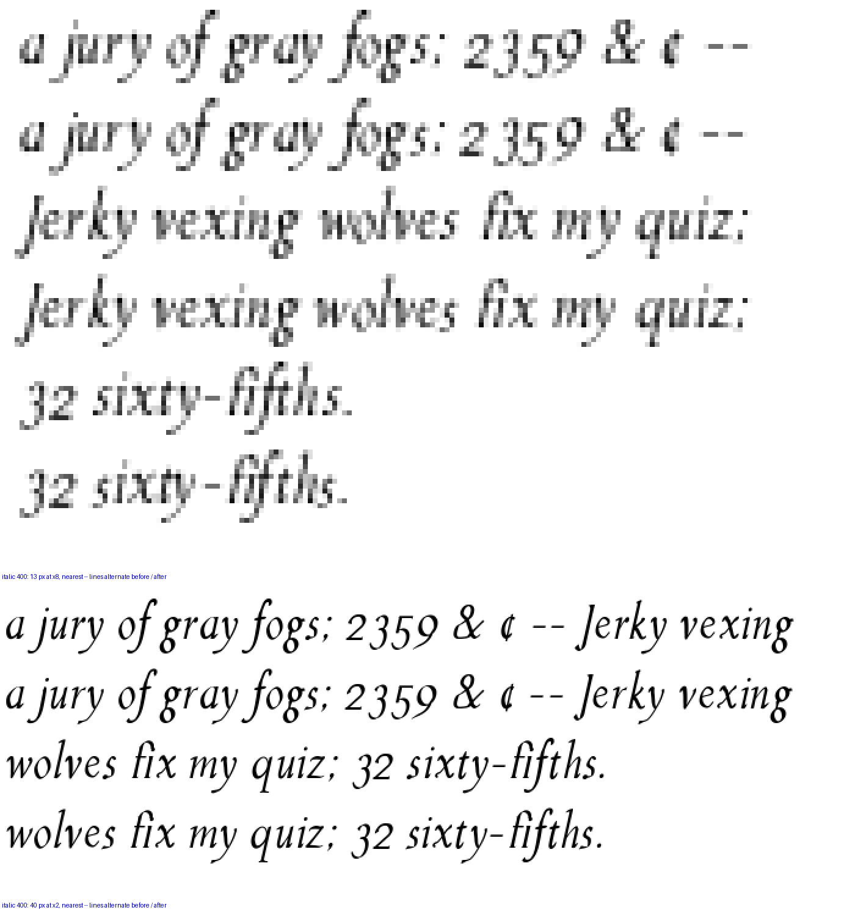
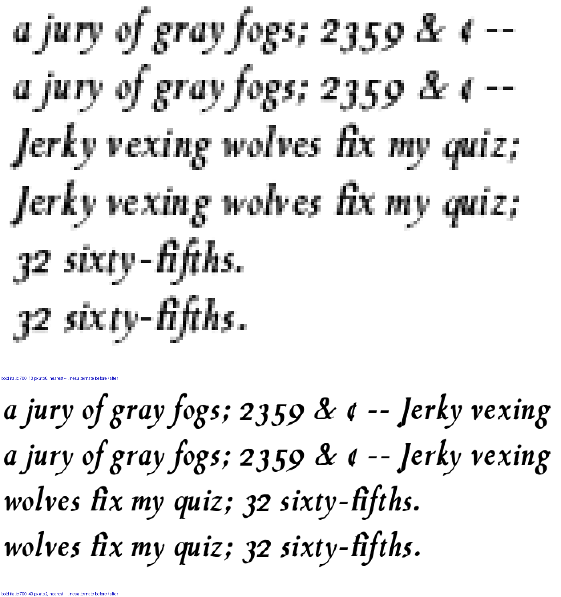
The letters, before and after, both weights
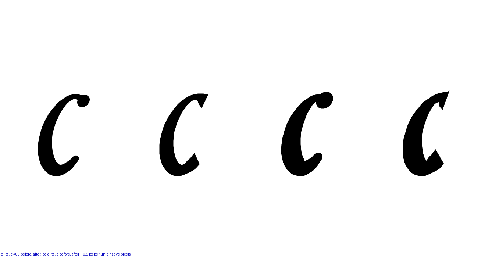
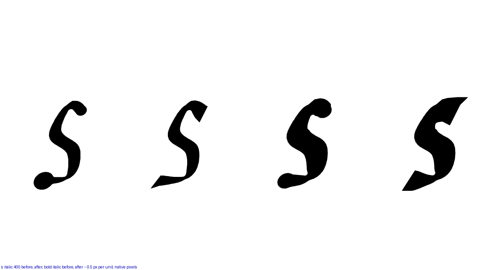
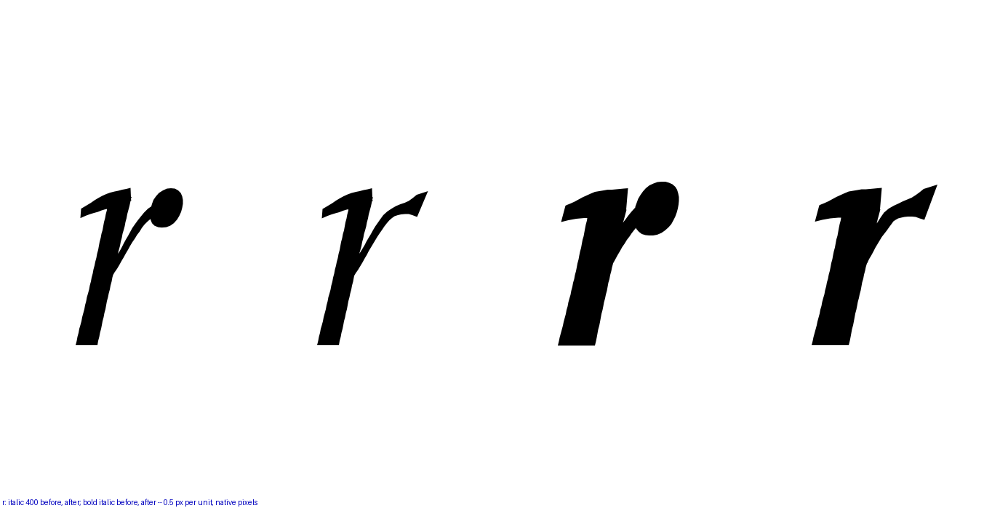
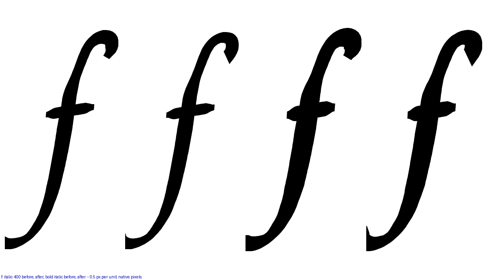
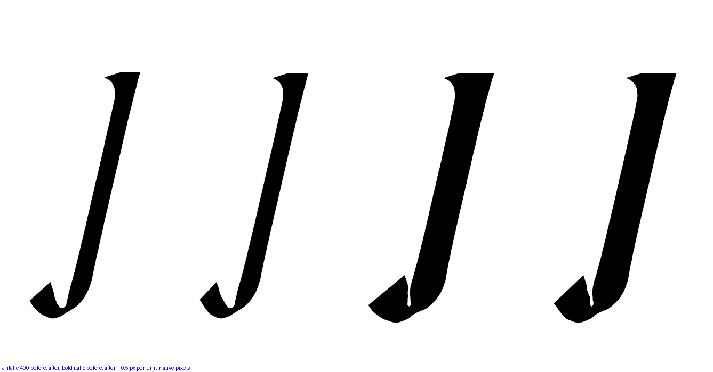
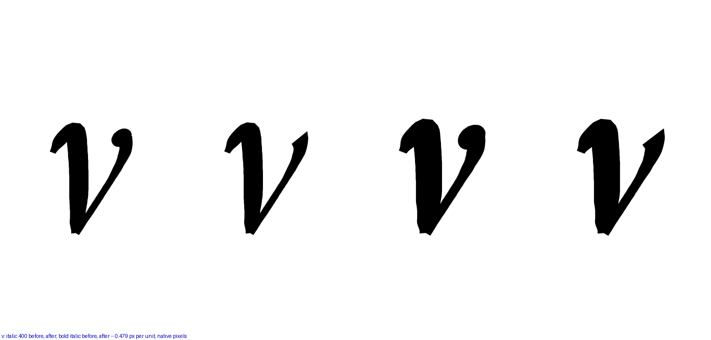
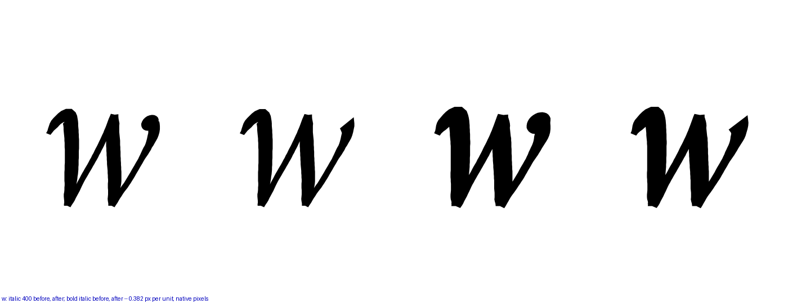
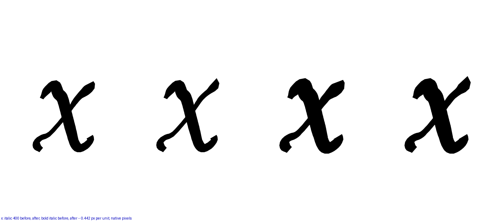
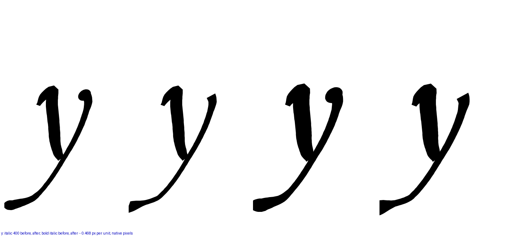
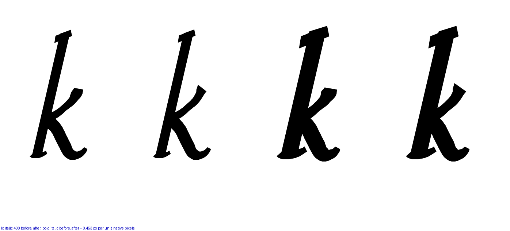

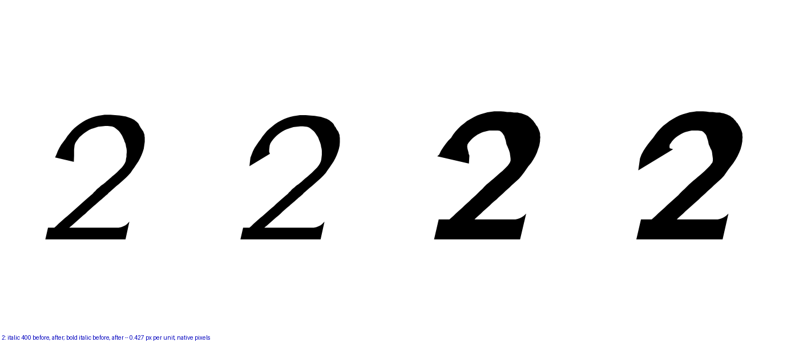
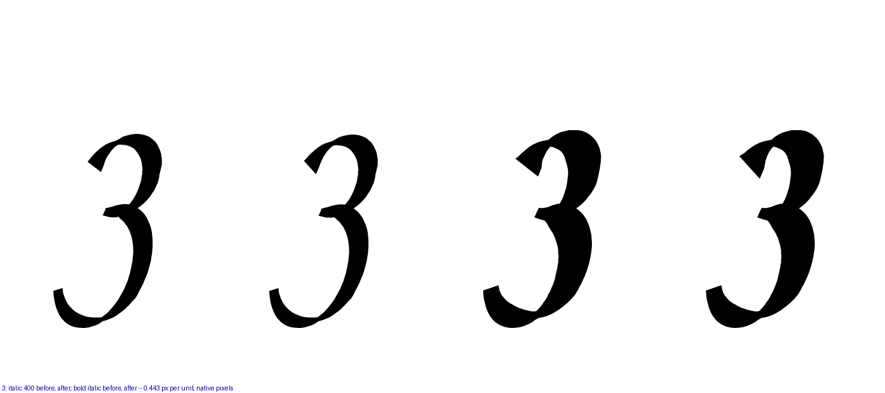
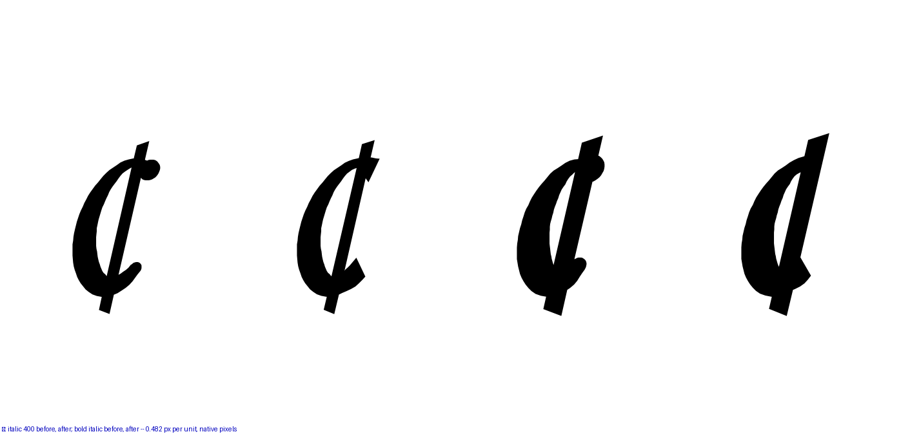